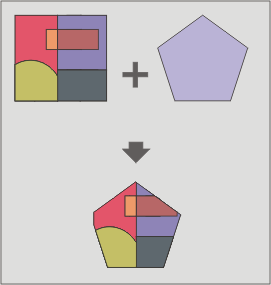

Ritaglia (clip)
Questo geoprocesso consente di limitare l'area di lavoro di un layer vettoriale (punti, linee o poligoni) e di estrarre un'area di interesse da questo.
A tal fine, occorre un layer in ingresso dal quale estrarre l'area di interesse e un layer di ritaglio in modo tale che l'unione delle geometrie incluse in quest'ultimo definiscano l'area di lavoro.
Questo geoprocesso controlla tutti gli elementi vettoriali del layer in ingresso e calcola l'intersezione di tutti gli elementi vettoriali contenuti nell'area di lavoro definita dal layer di ritaglio, in modo che nel layer risultante siano presenti solo gli elementi vettoriali dell'area di lavoro. Le parti di geometria che giacciono esternamente all'area di lavoro sono ritagliate. Il layer risultante eredita lo schema alfanumerico degli attributi del layer in ingresso.

Questo geoprocesso può risultare utile nel caso in cui si intenda limitare l'estensione geografica del layer con cui si sta lavorando ad una regione di interesse di minore estensione (ad esempio, quando si realizza un SIT a scala locale con layer appartenenti ad un set di dati a scala nazionale).